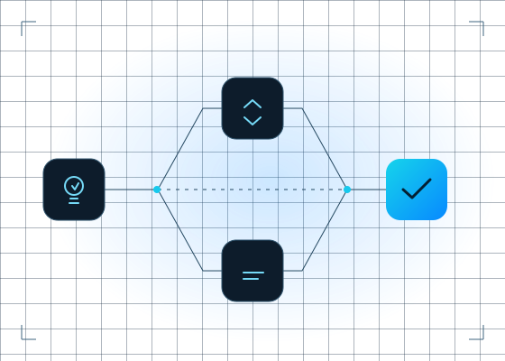

About Singleton-Campbell
A small studio.
A considered approach.
We are Singleton-Campbell Limited, a software development company based in the United Kingdom. Independent thinking and purposeful software sit at the heart of our work.
SC / THE DEVELOPMENT MINDSET

From a useful question
to a thoughtful solution.
Good software begins with understanding what it needs to do, who it is for and where it fits. That is the perspective we bring to product development and research.
We are interested in the connections between people, applications and information — and in making those connections clearer and more useful.
- 01Define the purpose before the technology.
- 02Explore ideas through practical development.
- 03Keep interfaces clear and understandable.
- 04Build with long-term usefulness in mind.
Our focus
Products and possibilities.
Our work includes StageCom and research into connected applications. These two strands reflect our interest in focused software products and the possibilities that emerge when systems work together.
Explore our projectsLet’s make something useful